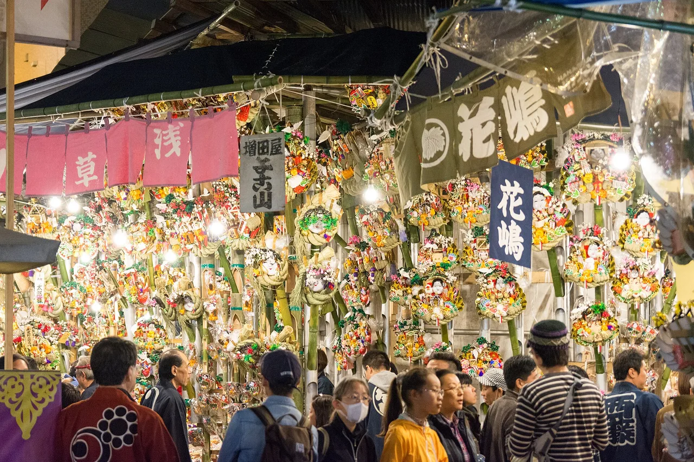

Tori-no-ichi：在午夜開幕的熊手市場
每年11月有兩天，淺草後方的小巷裡擺滿了和小孩一樣高的竹製熊手，上面綴滿金幣、寶船與笑臉面具。這就是tori-no-ichi（酉の市），東京商家在此購買來年好運的市場。日期是最難掌握的部分：它依循舊曆的酉日，因此每年日期都不同，且可能有兩天或三天。2026年共有兩天——11月7日（星期六）與11月19日（星期四）——每天從午夜鼓聲起連續開放整整二十四小時。

2026年日期，以及為何每年變動
Tori-no-ichi在11月的酉日舉行。舊日本曆法以十二生肖動物循環標記每一天，因此酉日每隔十二天出現一次——這意味著11月可能包含兩個或三個酉日，且每年日期都不同。沒有固定日期可以記憶，任何告訴你「tori-no-ichi在11月中旬」的指南都只是在猜測。
淺草鷲神社在其官方網站上公布當年日期。2026年列出11月7日（星期六）為ichi-no-tori，11月19日（星期四）為ni-no-tori。今年沒有第三個酉日。
| 年份 | 11月的酉日 | 共幾天 |
|---|---|---|
| 2023 | 11月11日及23日 | 兩天 |
| 2024 | 11月5日、17日及29日 | 三天 |
| 2025 | 11月12日及24日 | 兩天 |
| 2026 | 11月7日（六）及19日（四） | 兩天 |
天數對日本人而言有迷信上的意義。市場官方網站直白地指出，即使在今日，有第三個酉日的年份據說會帶來更多火災。對此說法的解釋各異，且無一具有權威性；一致的是，這個說法至今仍被流傳。2026年只有兩個酉日，所以今年秋天你不太會聽到這個說法。
2026年曆法的一個實際影響：第一個市場日落在星期六。週末ichi-no-tori夜晚的淺草，是這個祭典最熱鬧的版本。如果你想自由走動而非隨人潮緩慢移動，星期四的那場人潮會少一些。
真的全天24小時開放
大多數日本祭典都有開放時間。這個沒有。鷲神社說明每個市場日的時間為午夜至午夜——儀式以ichiban-daiko（一番太鼓）、即00:00敲響的第一聲鼓為開端，祭典隨後整天持續進行。
那聲鼓也是購物者的起跑信號。神社指出，各攤位準備的義賣熊手從第一聲鼓響起時開始販售，先到先得。這就是為什麼tori-no-ichi的照片看起來常像是在深夜拍攝的：因為確實如此。
如果你只能去一次，選擇午夜開幕而非傍晚。隊伍在列出日期的前一晚00:00之前就會形成——2026年意味著11月6日及18日的深夜。限制在於電車而非神社：東京末班車約在午夜，首班車約在05:00，因此請計劃好在電車停駛前離開，或等到電車開始運行再走。
kumade熊手究竟是什麼
kumade（熊手）字面意思是熊掌——即耙子。祭典版本是一把竹製耙子，上面裝飾著各種吉祥物：金幣（koban）、米俵、寶船、鯛魚，以及圓臉微笑的Okame。其邏輯農業而直白：耙子能把東西耙攏，所以裝飾過的耙子能把金錢與好運耙進來。
市場官方網站提供了農具如何變成吉祥物的三種說法，且未偏向其中任何一種：
- 老鷹的利爪。老鷹抓住獵物後不放，因此好運也以同樣方式被「抓住」——利爪的形狀演變成耙形護符。
- 軍扇。武將在勝利後奉納於神社的軍扇，因變形而呈現彎曲的耙狀，成為開運的護符。
- 農具。Tori-no-ichi起源於江戶郊外花又村的豐收祭，當時販售的是實用的耙子。江戶的品味將實用的耙子轉化為充滿雙關語意的吉祥耙。
同一資料來源將淺草市場的盛名追溯至明和8年（1771年）前後，當時鷲妙見菩薩被安置於長國寺，並指出精緻的髮簪式熊手是那個時代的流行。淺草觀光聯盟記載，該市場在寶曆、明和年間（1750-60年）已是著名的年度盛事。
被稱為「kumade」的有兩種不同物品，值得加以區分。大型裝飾熊手來自商販攤位，沒有標價。小型的kumade-mamori（熊手守り）是神社本身以固定價格發行的護符，與其他御守相同。如果你想要的是紀念品而非商業儀式，護符才是適合購買的那一種。
官方頁面未記載的購買儀式
每一篇日文說明都描述了相同的流程，而這正是訪客最想弄清楚的部分。以下是說明——附帶一個重要的注意事項。
熊手沒有標價。你指著一把詢問，賣家報出一個價格，你以幾百日圓為單位向下議價，當雙方達成協議時，賣家喊maketa（「我輸了」），買家回應katta（「買到了」）——這兩個詞同時也是「輸」和「贏」的意思。接著出現轉折：你把折扣的金額作為謝禮還給對方（ご祝儀，goshūgi），所以你實際上支付的大約還是原本的開價。議價從來就不是為了省錢。攤位隨後會在你的購買物上方進行節奏性的拍手，即tejime，店員再幫你把熊手扛出去。據說老顧客每年都會買大一號，從不縮小。
議價—給謝禮—拍手的流程在日本媒體和零售網站上有一致的描述，但在本指南所查閱的任何官方頁面上均未出現：鷲神社、長國寺及市場官方網站皆無此記載。請將其視為你會看到的事情，而非對你的要求。如果你只是以開價購買一把小熊手並道謝，你沒有做錯任何事，也不會有人這樣認為。你不應該做的是對mame-kumade（豆熊手，掌心大小的熊手）或神社的kumade-mamori議價——那些是固定價格的商品，對其議價會被視為誤解。
前往地點：東京33處市場
淺草是規模最大的，但官方市場網站連結了東京33座神社和寺廟，各自舉辦自己的tori-no-ichi。幾乎所有場地都將日期列為「11月的酉日」，因此上述2026年日期同樣適用。列出的例外是西新井大師，其市場改在12月21日舉行。
| 市場 | 前往理由 |
|---|---|
| 鷲神社，淺草浅草 鷲神社 — Senzoku, Taitō | 發源地，也是規模最大的。午夜至午夜開放，第一聲鼓響，義賣熊手從00:00起先到先得，以及下文介紹的nade-okame臉 |
| 長國寺，淺草酉の寺 鷲山寺 長國寺 | 緊鄰神社的寺廟，在相同日期舉辦市場。鷲妙見菩薩約於1771年安置於此，使淺草成為「酉之町」 |
| 花園神社，新宿花園神社 | 以氣氛取勝而非規模的東京市場——位於Golden Gai與歌舞伎町之間。新宿觀光振興協會指出，花園神社在每個酉日前一天舉辦zen'yasai（前夜祭），2026年分別落在11月6日及18日傍晚。本文查閱時，神社尚未公布其2026年自身日期 |
| 大鳥神社，目黑大鳥神社 | 東京西南部的社區規模市場，比淺草容易走動得多 |
| 富岡八幡宮，江東富岡八幡宮 | 同時也是深川七福神路線的終點，若你計劃在11月旅行時一併規劃新年行程 |
| 西新井大師，足立西新井大師 | 特例：其市場在12月21日，而非11月的酉日 |
官方名單上還包括：花又（足立）的大鳥神社、北野神社、練馬大鳥神社、葛西神社、武蔵野八幡宮等。出發前請向各場地確認——名單提供的是通則日期，而非逐年公告。
不需要門票，也沒有入口閘門。市場在運作中的神社或寺廟境內舉行，上述官方頁面均未列出入場費用。你所付的錢是買熊手的。
東京以外，以及關西的不同之處
Tori-no-ichi作為熊手市場是關東的傳統，那些聲稱京都或大阪也有的搜尋結果，在對照神社官方頁面後都站不住腳。
大鳥信仰的總本社並不在東京：它是位於大阪堺市的大鳥大社（大鳥大社，大鳥北町1-1-2）。其公布的年度祭典清單確實包含11月酉日的儀式，神社稱之為tori-no-hi-sai（酉の日祭）——是一項儀式，而非市場。該清單未提及任何熊手或攤位。因此你可以在大阪參加11月酉日的儀式；但無法在那裡購買熊手。
關於京都，無法確認任何資訊。未發現任何京都神社或寺廟在其官方網站上公布11月酉日市場，而淺草市場的33處場地名錄僅涵蓋東京。宣傳「京都tori-no-ichi」的英文頁面，在場地本身說明之前，應視為未經核實的資訊。
這個規律值得記住，適用於任何日本祭典。共用同一名稱的神社通常屬於同一信仰體系，而信仰傳播的範圍往往比祭典更廣。大鳥神社遍布日本各地；熊手市場是在江戶的少數幾座神社周邊發展起來的，並留存至今。
在鷲神社撫摸的那張臉
在淺草鷲神社有一個大型面具臉，稱為nade-okame（なでおかめ），代表女神天宇受賣命。你可以撫摸它，神社公布了各部位的對應功效。
| 撫摸部位 | 對應功效 |
|---|---|
| 額頭 | 智慧 |
| 眼睛 | 先見之明 |
| 鼻子 | 財運 |
| 右臉頰 | 戀愛成就 |
| 左臉頰 | 健康 |
| 嘴巴 | 消災解厄 |
| 下巴，再順時針撫摸 | 諸事圓滿 |
神社自己的說明對磨損痕跡出奇地坦率：鼻子獲得最多關注，因為這是一座商業神社；而右臉頰因年輕訪客祈求戀愛運而明顯變黑。一個排程注意事項——okame過去在市場期間會被移至辦公室入口，但神社從2015年起基於安全考量停止了這個做法。在非市場期間，它仍如往常般立於正殿前方。
Tori-no-ichi位於日本吉祥物季節的開端。它延伸至1月初的七福神蓋章路線 →，以及1月6至7日的達摩市場 →。如果你收集的是紙本而非實物，從御朱印——神社與寺廟的印章 →開始吧。
實際會用到的日語
以下是攤位橫幅和神社告示上的詞彙——包括成交時大聲喊出的兩個詞。
| 日語 | 讀音 | 意思 |
|---|---|---|
| 酉の市 | tori-no-ichi | 酉日市場 |
| 一の酉 / 二の酉 / 三の酉 | ichi-no-tori / ni-no-tori / san-no-tori | 11月第一、第二、第三個酉日 |
| 熊手 | kumade | 耙子——字面意思是「熊掌」 |
| 縁起熊手 | engi-kumade | 攤位販售的裝飾吉祥熊手 |
| 熊手守り | kumade-mamori | 神社發行的小型熊手護符 |
| 豆熊手 | mame-kumade | 掌心大小的熊手——固定價格，不議價 |
| 一番太鼓 | ichiban-daiko | 午夜敲響以開幕祭典的第一聲鼓 |
| まけた / かった | maketa / katta | 「輸了」／「買到了」——成交時的一問一答 |
| ご祝儀 | goshūgi | 折扣後回贈的謝禮 |
| 手締め | tejime | 購買完成後的節奏性拍手 |
| 商売繁昌 | shōbai hanjō | 生意興隆——熊手的用途所在 |
| なでおかめ | nade-okame | 可撫摸的Okame臉 |
想記住這些詞彙？免費JLPT對戰測驗以間隔重複法訓練旅遊與文化詞彙。
常見問題
Q. 2026年的Tori-no-ichi是哪幾天？
A. 共有兩個市場日：11月7日（星期六）和11月19日（星期四）。淺草鷲神社將這兩天分別公布為ichi-no-tori和ni-no-tori。2026年11月沒有第三個酉日。
Q. 為什麼日期每年都會變動？
A. 市場在舊十二生肖日循環的酉日舉行，酉日每隔十二天出現一次。依據循環在11月的起始位置，該月可能包含兩個或三個酉日，且每年日期都不同。
Q. Tori-no-ichi幾點開始？
A. 在淺草鷲神社，每個市場日從午夜開放至午夜——整整24小時。儀式以00:00的第一聲鼓為開端，各攤位的義賣熊手從鼓響起時開始販售，先到先得。
Q. kumade熊手是什麼？
A. 一把裝飾著吉祥物的竹製耙子，用來「耙進」財富與好運。市場官方網站提供三種起源說法——老鷹抓握的利爪、武將變形的軍扇，以及市場前身豐收祭上販售的普通農用耙子。
Q. 我必須為kumade議價嗎？
A. 不必。議價—給謝禮—拍手的習俗在日本媒體中廣泛描述，但未出現在任何官方神社、寺廟或市場頁面上，也不是對你的要求。以開價購買是完全可以的。掌心大小的熊手和神社自己的熊手護符是固定價格，完全不應議價。
Q. 第三個酉日真的代表會有更多火災嗎？
A. 這是一個說法，市場官方網站指出至今仍被流傳。2026年11月只有兩個酉日，所以今年不適用。
Q. 除了淺草，還有哪裡可以參加Tori-no-ichi？
A. 市場官方網站連結了東京33座神社和寺廟，包括新宿的花園神社、目黑的大鳥神社和江東的富岡八幡宮。幾乎所有場地都遵循11月的酉日；西新井大師是例外，其市場在12月21日舉行。
Q. 參加Tori-no-ichi需要門票嗎？
A. 不需要。無需預約，也沒有入口閘門。市場在運作中的神社或寺廟境內舉行，上述官方頁面均未列出入場費用。你所付的錢是買熊手的。
Q. 京都或大阪有Tori-no-ichi嗎？
A. 沒有熊手市場。大阪堺市的大鳥大社——大鳥信仰的總本社——在其年度祭典清單中列有11月酉日的儀式，稱為tori-no-hi-sai，但該清單未提及任何熊手或攤位。關於京都，未發現任何神社或寺廟在其官方網站上公布11月酉日市場。淺草市場的33處場地名錄僅涵蓋東京。